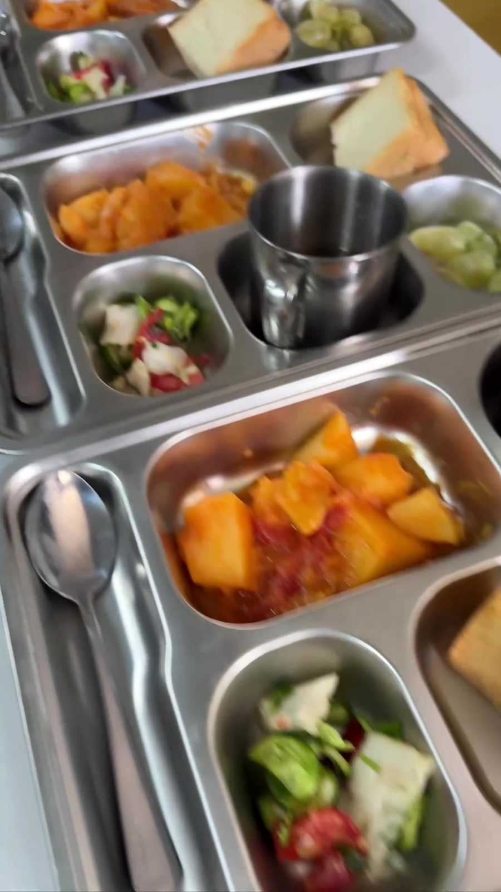
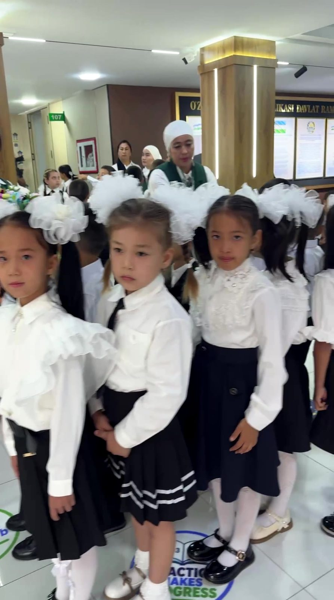
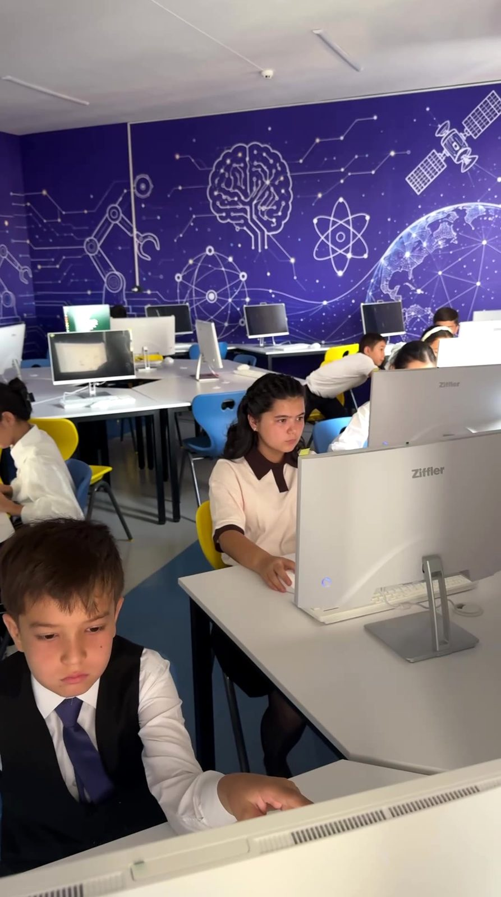
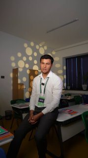

Kelajak şu yerda boşlanadi
Oltinköldagi xalqaro maktab: IT, ingliz tili va SAT/AP. Pre-School va 1–8-sinflar.
Oltinköldagi xalqaro maktab: IT, ingliz tili va SAT/AP. Pre-School va 1–8-sinflar.
Nonuştadan uyga ketgunça: har bir soat öylangan. Lentani yon tomonga suring.





Bir yilda bola 1-sinf davlat dasturini tugatadi va kuçli ingliz tili bilimiga ega böladi. Guruhda 18 nafardan ortiq bola bölmaydi.
Tayyor javob berilmaydi: bola özi izlanadi va amalda sinab köradi. 22 yillik tajribali ustozlar har bir bolaning sur'atiga moslaşadi.

Çuqurlaştirilgan IT, matematika va ingliz tili. 50 dan ortiq öquvçi IRN olimpiadasida qatnaşdi, 12 nafari iqtidor grantini yutdi.
AQŞ va dunyoning yetakçi universitetlari SAT natijasini söraydi. AP fanlari esa universitet kreditini maktabdayoq olişga imkon beradi.
Reading & Writing va Math. Kompyuterda, adaptiv format.
Computer Science, Calculus, English Language va boşqa fanlar.
Diagnostika, poydevor, mock testlar va universitetga ariza.

Matematika va SAT Math mutaxassisi. SAT Math 800/800, Matematika A+. 100 öquvçini 700+ natijaga olib çiqqan, 200 dan ortiq öquvçining universitetga kirişiga yordam bergan.




Qabul: ariza, akademik test, suhbat va şartnoma. Taşrif vaqtini aloqa markazimiz bilan kelişib olasiz.